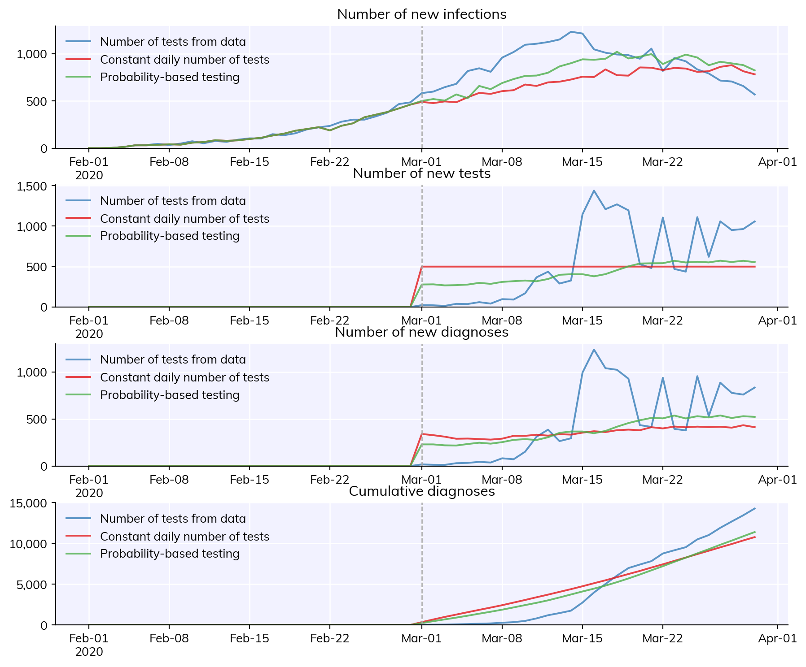
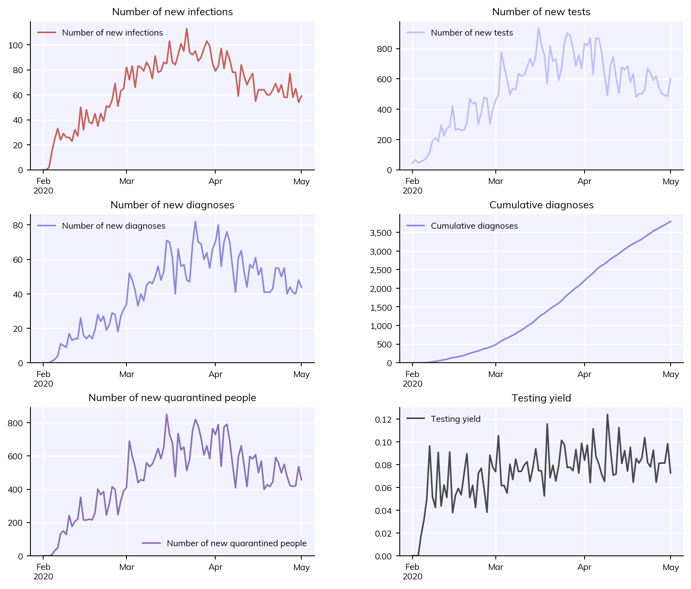
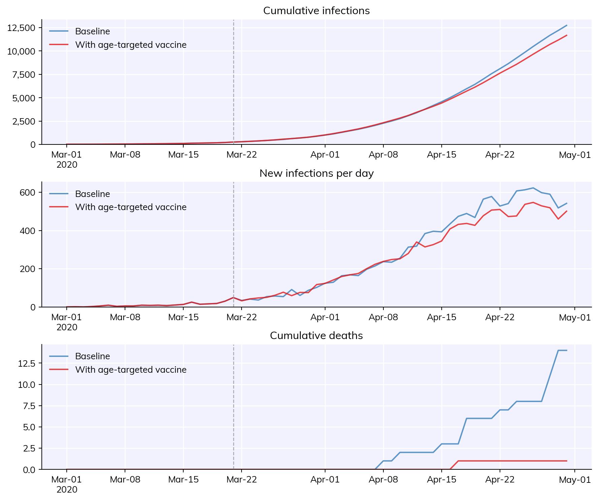
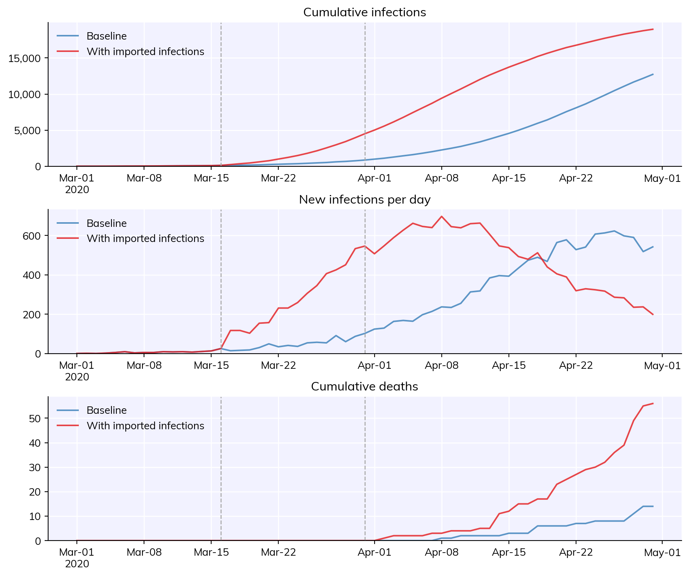
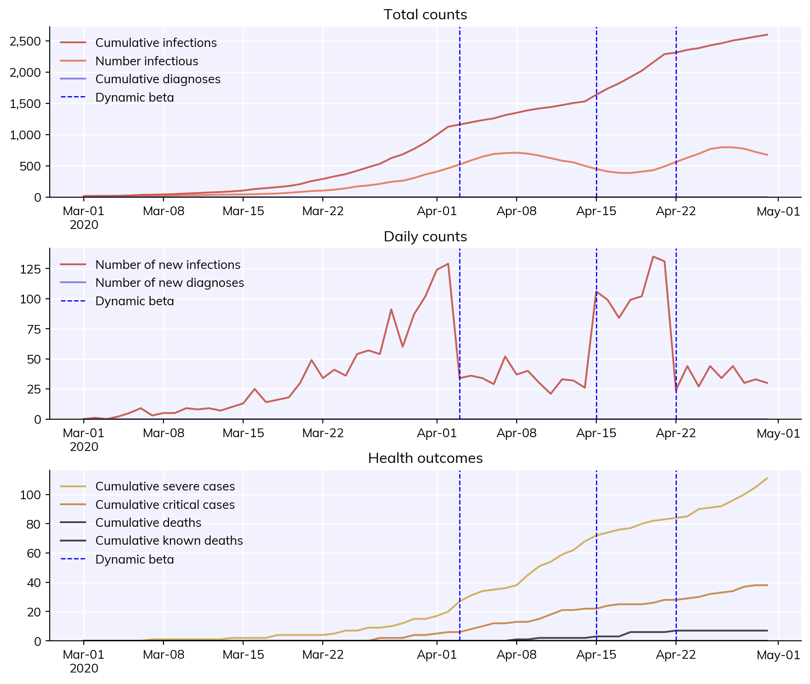
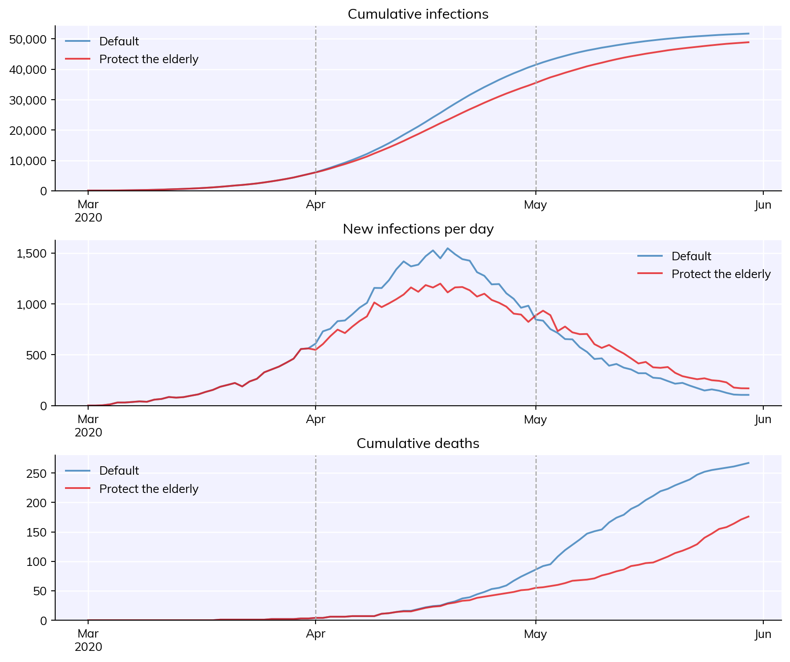

Interventions are one of the most critical parts of Covasim. This tutorial shows how to implement standard interventions, as well as how to define your own custom interventions.
Click here to open an interactive version of this notebook.
Change beta and clip edges
The most basic intervention in Covasim is “change beta”: this changes overall transmission rates on the specified day(s), no questions asked. For example:
import covasim as cvcv.options(jupyter=True, verbose=0)# Define baseline parameters and simpars =dict( start_day ='2020-03-01', end_day ='2020-06-01', pop_type ='hybrid',)orig_sim = cv.Sim(pars, label='Baseline')# Define sim with change_betacb = cv.change_beta(days=['2020-04-15', '2020-05-01', '2020-05-15'], changes=[0.2, 1.5, 0.7])sim = cv.Sim(pars, interventions=cb, label='With beta changes')# Run and plotmsim = cv.parallel(orig_sim, sim)msim.plot()
By default, interventions are shown with vertical dashed lines. You can turn this off by passing do_plot=False to the intervention.
Look at the new infections plot (middle) for the clearest illustration of the impact the intervention has.
Note that like other “parameters”, you can either pass interventions to the sim directly or as part of the pars dictionary; the examples below illustrate these options.
All interventions handle dates automatically, so days can be specified as strings, integer numbers of days from the start of the sim, or datetime objects. You can even mix and match (e.g. days=[10, '2020-05-05']), although this is not recommended for obvious reasons!
If your simulation has different layers (discussed in Tutorial 1), you can also define the beta change to only apply to a single layer. For example, an intervention that closed 90% of schools ('s') on September 1st would be written as:
The “clip edges” intervention works similarly to the “change beta” intervention, with two important distinctions:
Whereas beta changes affect the per-contact transmission probability, clip edges change the number of contacts. For example, in the close_schools example above, each school-aged child has an unchanged number of contacts (about 20), but 10 times lower probability of infection per contact (about 0.1% per contact per day). If clip edges were used instead, then each child would have unchanged probability of infection per contact (about 1% per contact per day), but 10 times fewer contacts (about 2).
While beta changes can be any value (greater or less than 1), as the name implies, clip edges can only clip edges, not create new ones. Edges that are clipped are saved and can later be restored, but you can never have a change of greater than 1.0 with clip edges.
Overall, it’s best to use change_beta for interventions that reduce per-contact risk (e.g., masks), and clip_edges for interventions that reduce the number of contacts per person. However, in practice, it tends to make relatively little difference to the simulation results. If in doubt, use change_beta.
You can use change_beta to do some gnarly things, like create sinusoidally varying infection probability:
There are two types of testing interventions in Covasim:
test_num performs the specified number of tests per day;
test_prob performs testing with the specified probability.
Typically, if you have actual data on number of tests, you would use test_num; otherwise, you would usually use test_prob. For test_num, other than the number of tests performed, the main parameter is symp_prob, which determines how much more likely someone with (true positive) COVID symptoms is to test than a person who is asymptomatic or uninfected. Higher values of symp_prob give more diagnoses per number of tests, since symptomatic people preferentially test. The default value is 100, meaning that on any given day, a person experiencing COVID symptoms is 100 times more likely to test than someone who isn’t.
Likewise, test_prob also lets you specify the (daily) probability of symptomatic vs. asymptomatic testing. Unlike test_num, however, the total number of tests is determined by these probabilities. For example, since symptomatic testing probabilities are usually much higher than asymptomatic, if the epidemic is growing, more people will be symptomatic and thus go to be tested.
Note that test probabilities for test_prob are daily probabilities, not total. If you set symp_prob = 0.3, this means a person has a 30% chance of testing per day of symptoms, meaning that on average they will go to be tested after 2-3 days. Given that symptoms last for up to 8 days, the total probability that they will test at some point during their illness is much higher than the daily probability.
The example below illustrates (a) test_num with data, (b) test_num with a fixed number of tests per day, and (c) test_prob.
import covasim as cv# Define the testing interventionstn_data = cv.test_num('data')tn_fixed = cv.test_num(daily_tests=500, start_day='2020-03-01')tp = cv.test_prob(symp_prob=0.2, asymp_prob=0.001, start_day='2020-03-01')# Define the default parameterspars =dict( pop_size =50e3, pop_infected =100, start_day ='2020-02-01', end_day ='2020-03-30',)# Define the simulationssim1 = cv.Sim(pars, datafile='example_data.csv', interventions=tn_data, label='Number of tests from data')sim2 = cv.Sim(pars, interventions=tn_fixed, label='Constant daily number of tests')sim3 = cv.Sim(pars, interventions=tp, label='Probability-based testing')# Run and plot resultsmsim = cv.parallel(sim1, sim2, sim3)msim.plot(['new_infections', 'new_tests', 'new_diagnoses', 'cum_diagnoses'])

Contact tracing
Contact tracing is the process of notifying the contacts of a diagnosed positive COVID case and letting them know that they have been exposed, so they can be tested, go into quarantine, or both. Since contact tracing uses diagnosed people to start with, and since people are only diagnosed if they are tested, you must include at least one testing intervention in your sim before including contact tracing. The main option for contact tracing is trace_prob, the probability that a person in each layer will be traced (usually high for households and lower for other layers). For example:
import covasim as cv# Define the testing and contact tracing interventionstp = cv.test_prob(symp_prob=0.2, asymp_prob=0.001, symp_quar_prob=1.0, asymp_quar_prob=1.0, do_plot=False)ct = cv.contact_tracing(trace_probs=dict(h=1.0, s=0.5, w=0.5, c=0.3), do_plot=False)# Define the default parameterspars =dict( pop_type ='hybrid', pop_size =50e3, pop_infected =100, start_day ='2020-02-01', end_day ='2020-05-01', interventions = [tp, ct],)# Create and run the simulationsim = cv.Sim(pars)sim.run()# Plot the simulationcv.options.set(fontsize=8) # Make the font size a bit smaller here so the labels don't overlapsim.plot(['new_infections', 'new_tests', 'new_diagnoses', 'cum_diagnoses', 'new_quarantined', 'test_yield'])cv.options.set(fontsize='default') # Reset to the default value

Since it’s assumed that known contacts are placed into quarantine (with efficacy sim['quar_factor']), the number of contacts who are successfully traced each day is equal to the number of people newly quarantined (bottom left panel). As is commonly seen using testing and tracing as the only means of epidemic control, these programs stop the epidemic from growing exponentially, but do not bring it to zero.
Since these interventions happen at t=0, it’s not very useful to plot them. Note that we have turned off plotting by passing do_plot=False to each intervention.
Simple vaccination
Vaccines can do one of two things: they can stop you from becoming infected in the first place (acquisition blocking), or they can stop you from developing symptoms or severe disease once infected (symptom blocking). The Covasim simple_vaccine intervention lets you control both of these options. In its simplest form, a vaccine is like a change beta intervention. For example, this vaccine:
But that’s not very realistic. A vaccine given on days 30 and 44 (two weeks later), with efficacy of 50% per dose which accumulates, given to 60% of the population, and which blocks 50% of acquisition and (among those who get infected even so) 90% of symptoms, would look like this:
For more advanced vaccine usage, see T8 - Vaccines and variants.
Age targeting and other subtargeting
For some interventions, you want them to preferentially apply to some people in the population, e.g. the elderly. For testing and vaccine interventions, this can be done using the subtarget argument. Subtargeting is quite flexible in terms of what it accepts, but the easiest approach is usually to define a function to do it. This function must return a dictionary with keys inds (which people to subtarget) and vals (the values they are subtargeted with). This example shows how to define a 20% transmission-blocking, 94% symptom-blocking vaccine with varying coverage levels by age (for the vaccine intervention, subtarget modifies prob, the probability of a person being vaccinated) applied on day 20:
import covasim as cvimport numpy as np# Define the vaccine subtargetingdef vaccinate_by_age(sim): young = cv.true(sim.people.age <50) # cv.true() returns indices of people matching this condition, i.e. people under 50 middle = cv.true((sim.people.age >=50) * (sim.people.age <75)) # Multiplication means "and" here old = cv.true(sim.people.age >=75) inds = sim.people.uid # Everyone in the population -- equivalent to np.arange(len(sim.people)) vals = np.ones(len(sim.people)) # Create the array vals[young] =0.1# 10% probability for people <50 vals[middle] =0.5# 50% probability for people 50-75 vals[old] =0.9# 90% probability for people >75 output =dict(inds=inds, vals=vals)return output# Define the vaccinevaccine = cv.simple_vaccine(days=20, rel_sus=0.8, rel_symp=0.06, subtarget=vaccinate_by_age)# Create, run, and plot the simulationssim1 = cv.Sim(label='Baseline')sim2 = cv.Sim(interventions=vaccine, label='With age-targeted vaccine')msim = cv.parallel(sim1, sim2)msim.plot()

If you have a simple conditional, you can also define subtargeting using a lambda function, e.g. this is a vaccine with 90% probability of being given to people over age 75, and 10% probability of being applied to everyone else (i.e. people under age 75%):
However, lambda functions are not known for their easy readability, so their use is discouraged.
Dynamic parameters
A slightly more advanced intervention is the dynamic parameters intervention. This is not an intervention the same way the others are; instead, it provides a consistent way to modify parameters dynamically. For example, to change the number of imported infections on day 15 from 0 to 100 (representing, say, resuming international travel), and then change back to 0 on day 30:
import covasim as cv# Define the dynamic parametersimports = cv.dynamic_pars(n_imports=dict(days=[15, 30], vals=[100, 0]))# Create, run, and plot the simulationssim1 = cv.Sim(label='Baseline')sim2 = cv.Sim(interventions=imports, label='With imported infections')msim = cv.parallel(sim1, sim2)msim.plot()

You can see the sudden jump in new infections when importations are turned on.
Dynamic triggering
Another option is to replace the days arguments with custom functions defining additional criteria. For example, perhaps you only want your beta change intervention to take effect once infections get to a sufficiently high level. Here’s a fairly complex example (feel free to skip the details) that toggles the intervention on and off depending on the current number of people who are infectious.
This example illustrates a few different features:
The simplest change is just that we’re supplying days=inf_thresh instead of a number or list. If we had def inf_thresh(interv, sim): return [20,30] this would be the same as just setting days=[20,30].
Because the first argument this function gets is the intervention itself, we can stretch the rules a little bit and name this variable self – as if we’re defining a new method for the intervention, even though it’s actually just a function.
We want to keep track of a few things with this intervention – namely when it toggles on and off, and whether or not it’s active. Since the intervention is just an object, we can add these attributes directly to it.
Finally, this example shows some of the flexibility in how interventions are plotted – i.e. shown in the legend with a label and with a custom color.
def inf_thresh(self, sim, thresh=500):''' Dynamically define on and off days for a beta change -- use self like it's a method '''# Meets threshold, activateif sim.people.infectious.sum() > thresh:ifnotself.active:self.active =Trueself.t_on = sim.tself.plot_days.append(self.t_on)# Does not meet threshold, deactivateelse:ifself.active:self.active =Falseself.t_off = sim.tself.plot_days.append(self.t_off)return [self.t_on, self.t_off]# Set up the interventionon =0.2# Beta less than 1 -- intervention is onoff =1.0# Beta is 1, i.e. normal -- intervention is offchanges = [on, off]plot_args =dict(label='Dynamic beta', show_label=True, line_args={'c':'blue'})cb = cv.change_beta(days=inf_thresh, changes=changes, **plot_args)# Set custom propertiescb.t_on = np.nancb.t_off = np.nancb.active =Falsecb.plot_days = []# Run the simulation and plotsim = cv.Sim(interventions=cb)sim.run().plot()

Custom interventions
If you’re still standing after the previous example, Covasim also lets you do things that are even more complicated, namely define an arbitrary function or class to act as an intervention instead. If a custom intervention is supplied as a function (as it was in Tutorial 1 as well), then it receives the sim object as its only argument, and is called on each timestep. It can perform arbitrary manipulations to the sim object, such as changing parameters, modifying state, etc.
This example reimplements the dynamic parameters example above, except using a hard-coded custom intervention:
This example explains how to create an intervention object that does much the same thing, but is more fully-featured because it uses the Intervention class.
You must include the line super().__init__(**kwargs) in the self.__init__() method, or else the intervention won’t work. You must also include super().initialize() in the self.initialize() method.
import numpy as npimport pylab as plimport covasim as cvclass protect_elderly(cv.Intervention):def__init__(self, start_day=None, end_day=None, age_cutoff=70, rel_sus=0.0, *args, **kwargs):super().__init__(**kwargs) # NB: This line must be includedself.start_day = start_dayself.end_day = end_dayself.age_cutoff = age_cutoffself.rel_sus = rel_susreturndef initialize(self, sim):super().initialize() # NB: This line must also be includedself.start_day = sim.day(self.start_day) # Convert string or dateobject dates into an integer number of daysself.end_day = sim.day(self.end_day)self.days = [self.start_day, self.end_day]self.elderly = sim.people.age >self.age_cutoff # Find the elderly people hereself.exposed = np.zeros(sim.npts) # Initialize resultsself.tvec = sim.tvec # Copy the time vector into this interventionreturndefapply(self, sim):self.exposed[sim.t] = sim.people.exposed[self.elderly].sum()# Start the interventionif sim.t ==self.start_day: sim.people.rel_sus[self.elderly] =self.rel_sus# End the interventionelif sim.t ==self.end_day: sim.people.rel_sus[self.elderly] =1.0returndef plot(self): fig = pl.figure() pl.plot(self.tvec, self.exposed) pl.xlabel('Day') pl.ylabel('Number infected') pl.title('Number of elderly people with active COVID')return fig
While this example is fairly long, hopefully it’s fairly straightforward:
__init__() just does what init always does; it’s needed to create the class instance. For interventions, it’s usually used to store keyword arguments and perform some basic initialization (the first two lines).
initialize() is similar to init, with the difference that it’s invoked when the sim itself is initialized. It receives the sim as an input argument. This means you can use it to do a fairly powerful things. Here, since sim.people already exists, we can calculate up-front who the elderly are so we don’t have to do it on every timestep.
apply() is the crux of the intervention. It’s run on every timestep of the model, and also receives sim as an input. You almost always use sim.t to get the current timestep, here to turn the intervention on and off. But as this example shows, its real power is that it can make direct modifications to the sim itself (sim.people.rel_sus[self.elderly] = self.rel_sus). It can also perform calculations and store data in itself, as shown here with self.exposed (although in general, analyzers are better for this, since they happen at the end of the timestep, while interventions happen in the middle).
plot() is a custom method that shows a plot of the data gathered during the sim. Again, it’s usually better to use analyzers for this, but for something simple like this it’s fine to double-dip and use an intervention.
Here is what this custom intervention looks like in action. Note how it automatically shows when the intervention starts and stops (with vertical dashed lines).
# Define and run the baseline simulationpars =dict( pop_size =50e3, pop_infected =100, n_days =90, verbose =0,)orig_sim = cv.Sim(pars, label='Default')# Define the intervention and the scenario simprotect = protect_elderly(start_day='2020-04-01', end_day='2020-05-01', rel_sus=0.1) # Create interventionsim = cv.Sim(pars, interventions=protect, label='Protect the elderly')# Run and plotmsim = cv.parallel(orig_sim, sim)msim.plot()

Because we collected information in the intervention itself, we can also plot that:
# Plot interventionprotect = msim.sims[1].get_intervention(protect_elderly) # Find intervention by typeprotect.plot()